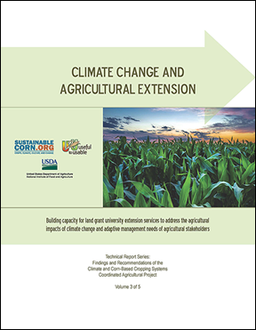
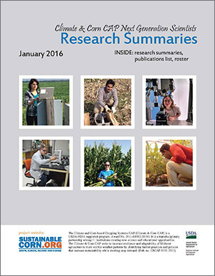

Find us on Twitter
Find us on TwitterResearch Summaries
140 scientists from various disciplines are working collaboratively on this project. As reports and summaries are published about their research and findings, we will make them available for you to read here.
Climate Change in the Corn Belt
Climate Change and Agricultural Extension
|  | This 40-page report provides findings and recommendations for building capacity for land grant university extension services to address the agricultural impacts of climate change and the adapative management needs of farmers and their advisers. The publication is a resource for extension educators and other farm advisers, as well. Click on the image to open and download.. |
Climate & Ag Research by Next Generation Scientists Summarized
|  | Learn about research being conducted, by our project's graduate students and post doctoral students, in a new booklet now available for viewing online. The booklet contains 33 research summaries, describing the work of some of the next generation, climate and agriculture scientists, who are currently conducting their research with our project, under the supervision of our Principal Investigators and faculty at participating universities. Click on the image to open and download. |
Resilient Agriculture Magazine
 |
Resilient Agriculture magazine contains articles which summarize some of the findings of the Sustainable Corn Project.
This publication won a 2014 Extension Education Materials Award, certificate of excellence, from the American Association of Agronomy and the 2014 Gold award for technical publications from the Association for Communications Excellence. Below you can download the entire magazine and individual articles. |
Resilient Agriculture Magazine |
| Abendroth, L. "Corn Growth and Development: Climate Matters." Resilient Agriculture.Aug. 2014: 6-7. Print. |
| "Corn Belt States Create Nutrient Reduction Strategies to Address Gulf of Mexico Hypoxia." Resilient Agriculture. Aug. 2014: 12-13. Print. |
| "In Season N Applications Increasing in Response to More Frequent Wet Springs." Resilient Agriculture. Aug. 2014: 34-35. Print. |
| Arbuckle, J.G., Jr., & Laws, L. "Farmer Perspectives." Resilient Agriculture. Aug. 2014: 20-23. Print. |
| Basso, B., & Naglekirk, R. "Predicting the Impact of Increasing Temperatures on Corn Yield." Resilient Agriculture. Aug. 2014: 10-11. Print. |
| Castellano, M. "Research Shows Soybeans Provide Consistent Reduction in Nitrous Oxide Emissions." Resilient Agriculture. Aug. 2014: 38-39. Print. |
| Eastburn, D. "Cover Crops Shown to Suppress Soybean Diseases." Resilient Agriculture. Aug. 2014: 40. Print. |
| Frankenberger, J. "Drainage Water Management in the Corn Belt." Resilient Agriculture. Aug. 2014: 14-15. Print. |
| Laws, L. "Cover Crops Produce Benefits in Wet and Dry Times." Resilient Agriculture. Aug. 2014: 16-17. Print. |
| Laws, L. "Lifecycle Benefits and Costs of Inorganic Nitrogen Fertilizer." Resilient Agriculture. Aug. 2014: 31-32. Print. |
| Laws, L. "Scientists Explore Crop Management Options for Storing Soil Carbon." Resilient Agriculture. Aug. 2014: 27-29. Print. |
| Laws, L. "Winter Rye Cover Cropping System: A Long Term Investment." Resilient Agriculture. Aug. 2014: 36-37. Print. |
| O'Neal, M. "Cover Crops Shelter Beneficial and Harmful Insects." Resilient Agriculture. Aug. 2014: 41. Print. |
| Strock, J., & Dalzell, B. "Understanding Water Needs of Diverse, Multi-year Crop Rotations." Resilient Agriculture. Aug. 2014: 18-19. Print. |
| Todey, D. "Climate Change Impacts in the Corn Belt." Resilient Agriculture. Aug. 2014: 8-9. Print. |
| Wright Morton, L., & J. Hobbs, J.G. Arbuckle Jr., A. Loy. "Corn Belt Farmers' Adaptation to Increased Precipitation." Resilient Agriculture. Aug. 2014: 24-25. Print. |